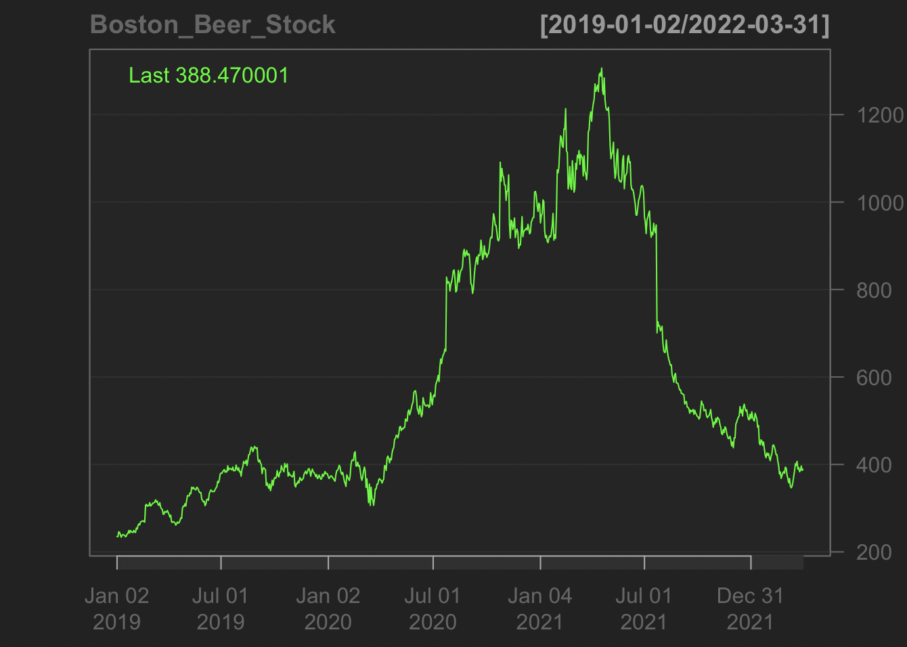

This page will fit our data with ARCH models and get the formula for our data.
We still use the stock price of the Boston beer company. The data are collected from 2019 until now.

This is the returns graph for our data. We get the return value and differencing our data after log-transformed.
From this graph, we can see some volatility suddenly happened in our time series data. This means we may want to fit an ARCH model to see if some events influence the stock price over time.
This is the acf and pacf plots for returns data and the square of returns.
Both of them do not show high correlations over lags.
We may only want to fit the ARCH model with the Arima model (1,1,0) which we get in the previous steps.
Back to our model diagnostics for the ARIMA(1,1,0).
The Standardized Residuals plot shows our data is stationary and has constant variance since they are centered.
The acf of residuals also proves stationary. We can see most lags stay in the white noise area.
The Normal Q-Q Plot of Residuals shows a linear relationship.
We can see most p values are above the significant level (0.05) at the p-values for the Ljung-Box statistic plot. This means our model fit to the data.
Squared residuals plot shows cluster of volatility. ACF abd PACF seems to die down.
The residuals therefore show some patterns that might be modeled.
We may want to fit the ARCH model with p from 1 to 4 to select the model ARCH model.

After we fit different ARCH models, we get the best model with ARCH(1) for our data. However, a further test is needed.
By doing the Ljung-Box Test, we get p-value equal to 0.953, which is higher than 0.05. We can not reject the null hypothesis of the Box Ljung Test that our model does not show a lack of fit. We may want to choose another model.
This is the equation for our dataset: